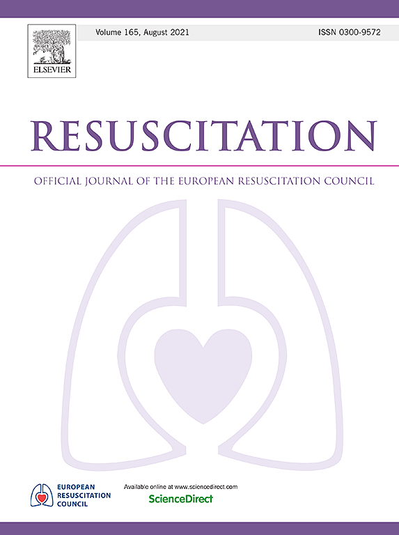

Risk factors and outcomes for recurrent paediatric in-hospital cardiac arrest: Retrospective multicenter cohort study

Abstract
Aim of Study
Recurrent in-hospital cardiac arrest (IHCA) is associated with morbidity and mortality in adults. We aimed to describe the risk factors and outcomes for paediatric recurrent IHCA.
Methods
Retrospective cohort study of patients ≤18 years old with single or recurrent IHCA. Recurrent IHCA was defined as ≥2 IHCA within the same hospitalization. Categorical variables expressed as percentages and compared via Chi square test. Continuous variables expressed as medians with interquartile ranges and compared via rank sum test. Outcomes assessed in a propensity match cohort.
Results
From July 1, 2015 to January 26, 2021, 139/894 (15.5%) patients experienced recurrent IHCA. Compared to patients with a single IHCA, recurrent IHCA patients were more likely to be trauma and less likely to be surgical cardiac patients. Median duration of cardiopulmonary resuscitation (CPR) was shorter in the recurrent IHCA (5 vs. 11 min; p < 0.001) with no difference in IHCA location or immediate cause of CPR. Patients with recurrent IHCA had worse survival to intensive care unit (ICU) discharge (31% vs. 52%; p < 0.001), and worse survival to hospital discharge (30% vs. 48%; p < 0.001) in unadjusted analyses and after propensity matching, patients with recurrent IHCA still had worse survival to ICU (34% vs. 67%; p < 0.001) and hospital (31% vs. 64%; p < 0.001) discharge.
Conclusion
When examining those with a single vs. a recurrent IHCA, event and patient factors including more pre-existing conditions and shorter duration of CPR were associated with risk for recurrent IHCA. Recurrent IHCA is associated with worse survival outcomes following propensity matching.